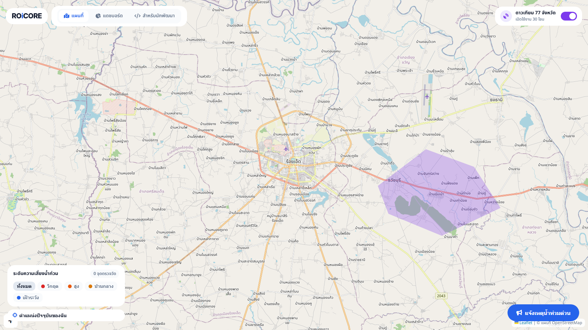
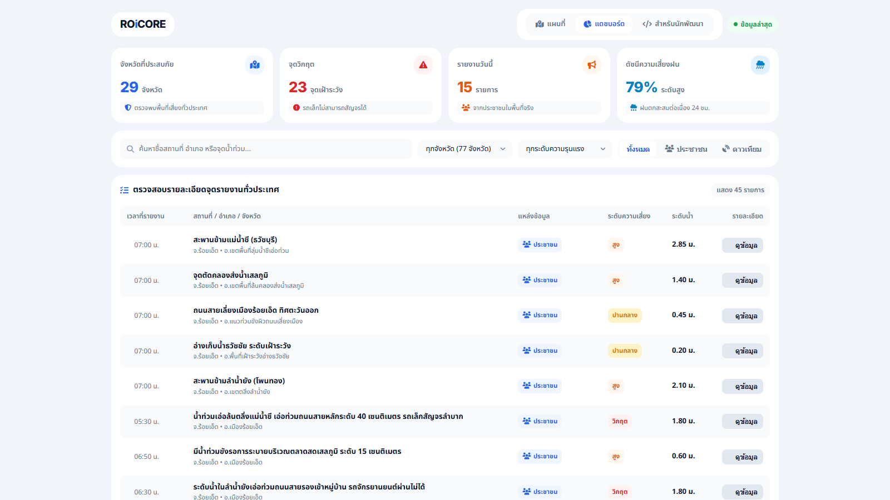

สถาปัตยกรรม Clean Architecture & โดเมนโมเดล OOP
แยกแกนกลางทางธุรกิจ (Domain Layer) เป็นอิสระจากฐานข้อมูลและเฟรมเวิร์กภายนอก
Clean Arch
FloodPoint
จุดเฝ้าระวังน้ำท่วม Encapsulate พิกัด
GeoLocation และระดับน้ำ waterLevel (เมตร) พร้อมคำนวณความเสี่ยงผ่าน evaluateRisk(IRiskStrategy)
State & Risk Evaluation
FloodReport
รายงานเหตุน้ำท่วมด่วนจากประชาชน บันทึกระดับความรุนแรง
Severity (1-4), แนบภาพถ่ายสถานที่จริง, เบอร์โทร และบันทึกสถานะ PENDING ➔ VERIFIED
Citizen Incident Report
GeoLocation
Value Object พิกัดละติจูด/ลองจิจูด พร้อม Invariant Validation ตรวจสอบขอบเขตประเทศไทย
(5.61 <= lat <= 20.46) และคำนวณระยะทาง distanceTo()
Immutable Value Object
Domain Enums
ระบบ Type Safety ครบวงจร:
RiskLevel (วิกฤต, สูง, ปานกลาง, เฝ้าระวัง), Severity (1-4), และ ReportStatus ป้องกันข้อมูลผิดพลาดตั้งแต่ Domain
Type Invariants & Enums
1. Encapsulation (การซ่อนข้อมูลภายใน)
GeoLocation และ FloodPoint ซ่อน properties เป็น private ทั้งหมด Enforce Invariant Validation ผ่าน Constructor ป้องกันค่าพิกัดผิดพลาด
2. Inheritance (การสืบทอดคุณสมบัติ)
FloodVictim (แจ้งเหตุฉุกเฉิน) และ Traveler (ตรวจสอบเส้นทาง) สืบทอดคุณสมบัติร่วมจาก User (Abstract Base) เพื่อแยกสิทธิ์และฟังก์ชันการทำงาน
3. Polymorphism (พหุสัณฐาน)
IRiskStrategy กำหนดสัญญา calculate() ให้ CompositeRiskStrategy สลับสูตรคำนวณตามสภาพอากาศและฝนตกได้แบบ Run-time
4. Abstraction (การซ่อนความซับซ้อน)
IFloodPointRepository ซ่อนคำสั่ง SQL, PostGIS Spatial Query และ Supabase API ไว้เบื้องหลัง Domain สั่งบันทึกได้โดยไม่ต้องรู้เทคโนโลยีจัดเก็บ
Architecture & โดเมนโมเดล
Part 1: Back-End Architecture & Domain Model
หน้า 01 / 06
3 Design Patterns หลักในการประมวลผลข้อมูล
การประยุกต์ใช้ GoF Patterns เพื่อความยืดหยุ่น การทดสอบ และการประเมินความเสี่ยงอัตโนมัติ
Strategy Pattern
CompositeRiskStrategy คำนวณคะแนนความเสี่ยงภัยพิบัติแบบถ่วงน้ำหนัก (Weighted Score): ระดับน้ำ (40%) + พยากรณ์ฝน 3 ชม. (35%) + ความหนาแน่นรายงาน (25%)
Output: LOW / MED / HIGH / CRITICAL
Repository Pattern
IFloodPointRepository & IFloodReportRepository แยก Data Access ออกจาก Domain Logic พร้อมคิวรีเชิงพื้นที่ PostGIS ST_DWithin
Clean Architecture Decoupling
Adapter Pattern
GistdaDisasterService & OpenWeatherService แปลงโครงสร้างข้อมูลดาวเทียม 77 จังหวัด และสภาพอากาศภายนอก เข้าสู่ Domain Model มาตรฐาน
External Data Normalization
In-Memory Cache
ระบบแคชข้อมูลในหน่วยความจำ (TTL 15 นาที) ลดภาระการเรียก External API และ Database รองรับการตอบสนองความเร็วสูงพิเศษ < 30ms
Latency < 30ms Response
1. Loose Coupling (ลดการพึ่งพา)
Domain Logic ไม่ผูกติดกับ SDK ภายนอกหรือฐานข้อมูล สามารถเปลี่ยน Database หรือ API Provider ได้ทันทีโดยไม่กระทบ Business Core
2. 100% Testability (ทดสอบได้สมบูรณ์)
สามารถสลับไปใช้ Mock Repository และ Mock Weather Data เพื่อรัน Automated Unit Test ได้อย่างรวดเร็วและแม่นยำ
3. Dynamic Risk Scoring (ประเมินสด)
ปรับเปลี่ยนสูตรคำนวณความเสี่ยงตามฤดูกาลหรือสภาพอากาศแบบ Run-time ผ่าน Dependency Injection โดยไม่ต้องแก้โค้ด Domain
4. High Performance (ประสิทธิภาพสูง)
ลดเวลาค้นหาข้อมูลเชิงพื้นที่ด้วย Spatial Indexing และ In-Memory Cache ตอบสนองคำขอจำนวนมากได้อย่างเสถียร
Enterprise Design Patterns
Part 1: Back-End Enterprise Design Patterns
หน้า 02 / 06
ระบบคำนวณเชิงพื้นที่ & REST API Engine
การคำนวณอาณาเขตน้ำท่วมอัตโนมัติ (Convex Hull) และการเชื่อมต่อข้อมูลความเร็วสูง
GISTDA
OpenWeather
Spatial Clustering
ระบบจัดกลุ่มรายงานที่อยู่ในรัศมี 500 เมตร เกิน 2 รายการ หรือมีระดับน้ำวิกฤต เพื่อวิเคราะห์คลัสเตอร์ความเสี่ยง
Density Radius 500m
Convex Hull
อัลกอริทึมคำนวณหาจุดยอดรูปหลายเหลี่ยมรอบกลุ่มจุดน้ำท่วม แล้วส่งออกเป็น GeoJSON Polygon ขอบเขตเตือนภัย
Graham Scan Algorithm
GISTDA 77
ไปป์ไลน์ดึงและประมวลผลข้อมูลภาพถ่ายดาวเทียมน้ำท่วมขังรายวัน แยกรายจังหวัดครอบคลุมทั้ง 77 จังหวัด
Daily Satellite Processing
High-Speed API
สถาปัตยกรรม API ความเร็วสูง พร้อมแคชข้อมูล ตอบสนองคำขอ Front-End ภายใน 15-30ms
Latency 15-30ms Response
roicore.app/api/console
// REST API Endpoints Specification
GET /api/points ➔ 200 OK (18ms)
POST /api/reports ➔ 201 Created (72ms)
GET /api/zones ➔ 200 GeoJSON (31ms)
Payload: { "success": true, "data": [...], "count": 42 }
Spatial Engine & REST API
Part 1: Back-End Spatial & High-Performance API
หน้า 03 / 06
ปรัชญาการออกแบบ: White Modern UI Architecture
ตัดสิ่งรบกวนสายตา สร้างมิติด้วยระดับชั้นของสีพื้นผิว (Surface Layering)
FA 6
Zero Border
ห้ามมีเส้นขอบกรอบตัดสายตาทุกชนิด ใช้ความสะอาดของพื้นที่ว่าง (Whitespace) และระยะห่างเป็นตัวกำหนดขอบเขตตามธรรมชาติ
Strict Zero Border Rule
Zero Shadow
ห้ามมีเงาดำเบลอซ้อนทับกัน กำจัดความเทอะทะและสัญญาณรบกวนทางสายตา เพื่อความคมชัดสูงสุดระดับ Retina Display
Crisp Retina Clarity
Surface Layering
สร้างมิติความลึกด้วยระดับชั้นสีพื้นผิว 4 ระดับ: Canvas (
#FFFFFF) ➔ Subtle (#F8FAFC) ➔ Active (#F1F5F9) ➔ Tint (#EFF6FF)
4 Surface Levels
Radius Hierarchy
สัดส่วนความมนที่สมดุลตามลำดับชั้น องค์ประกอบภายนอกมนกว่าภายในเสมอ (Container 18px > Card 14px > Button 10px > Pill 6px)
Harmonious Scale
1. Thai-First & Human Centric
ใช้ภาษาไทยเข้าใจง่าย สุภาพ ปราศจากศัพท์เทคนิคที่ไม่จำเป็นบนหน้าจอ (เช่น Controller, JSON) และไร้วงเล็บภาษาอังกฤษซ้ำซ้อน
2. High Information Density
จัดวางข้อมูลกระชับ อ่านง่าย มองเห็นภาพรวมของสถานการณ์ทั้งหมดได้อย่างครบถ้วนในหน้าจอเดียวโดยไม่ต้องเลื่อนหา
3. Semantic Status Color Tokens
ระบบสีสื่อความหมายชัดเจน: แดง (วิกฤต) • ส้ม (เสี่ยงสูง) • เหลือง (ปานกลาง) • ฟ้า (เฝ้าระวัง) • เขียว (สถานะปกติ)
4. Typography Hierarchy
Noto Sans Thai สำหรับภาษาไทยที่คมชัดอ่านง่าย ผสาน Inter สำหรับตัวเลข พิกัด และรหัสทางเทคนิค
White Modern UI Design
Part 2: Front-End Design System & Tokens
หน้า 04 / 06
หน้าหลัก: แผนที่น้ำท่วมอัจฉริยะ (Interactive Map View)
แสดงผลเต็มหน้าจอ (100vw, 100vh) ด้วย Leaflet.js ผสานข้อมูลดาวเทียมและพิกัดผู้ใช้
OpenStreetMap
เรนเดอร์แผนที่เวกเตอร์เต็มหน้าจอ 100vw x 100vh แพนและซูมลื่นไหล 60 FPS ด้วย Leaflet 1.9.4
Fullscreen 100vw x 100vh
Custom Risk Markers
หมุดแยก 4 สีตามระดับความเสี่ยง พร้อม Interactive Popup Card แสดงระดับน้ำ (เมตร) และภาพถ่ายจริง
4-Tier Risk Markers
GISTDA Satellite
สวิตช์เปิด-ปิดเลเยอร์ภาพถ่ายดาวเทียมน้ำท่วมขัง 77 จังหวัดรายวันจาก GISTDA แสดงพื้นที่ท่วมระดับภูมิภาค
77 Provinces Satellite
Polygon Zones
แสดงอาณาเขตพื้นที่วิกฤตด้วยแรเงาสีแดงโปร่งแสงตามขอบเขต Convex Hull ที่คำนวณจาก Back-End
Hazard Boundary Shading
http://localhost/roicore/public/map_view.php

Interactive Spatial Map
Part 2: Front-End Spatial Map Engine
หน้า 05 / 06
ระบบรายงานด่วน ≤ 3 Taps & แดชบอร์ดวิเคราะห์ผล
ประสบการณ์ผู้ใช้ที่เร็วที่สุดสำหรับเหตุฉุกเฉิน พร้อมศูนย์กลางตรวจสอบข้อมูล 77 จังหวัด
Dashboard
≤ 3 Taps
Tap 1: เลือกระดับน้ำ
ปุ่มกด Grid 4 ตัวเลือก: เล็กน้อย / ปานกลาง / รถเล็กผ่านไม่ได้ / วิกฤต (ท่วมมิดคัน)
4 Visual Grid Buttons
Tap 2: เบอร์ & รูปภาพ
จดจำเบอร์โทรศัพท์ลง LocalStorage อัตโนมัติ ไม่ต้องกรอกซ้ำ พร้อมปุ่มแนบรูปถ่าย
LocalStorage Memory
Tap 3: ยืนยันส่ง
ดึงพิกัด GPS อัตโนมัติ หมุดสดและขอบเขตแสดงบนแผนที่ทันที (One-Click Submit)
Auto GPS & Live Pin
Real-Time Sync
ข้อมูลรายงานถูกกระจายเข้าสู่แดชบอร์ดศูนย์บัญชาการแบบเรียลไทม์ทันที
Instant Command Center Sync
http://localhost/roicore/public/dashboard_view.php

Quick Report & Dashboard
Part 2: Front-End UI, Dashboard & System Readiness
หน้า 06 / 06